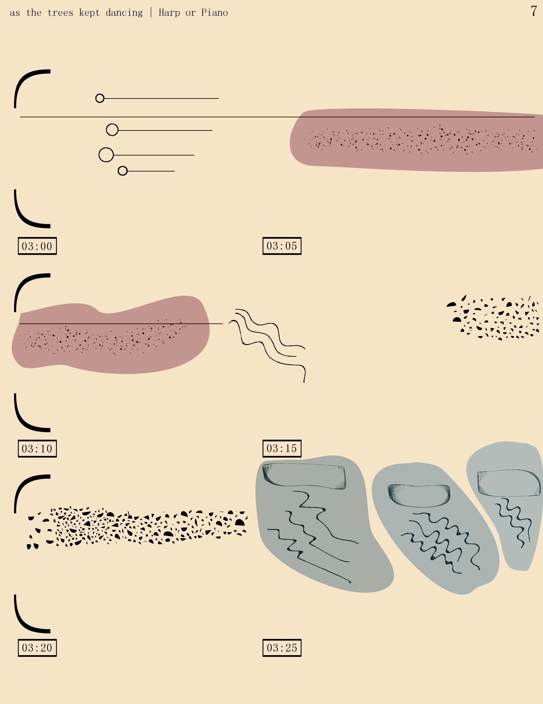

Title or something...
This is template page for Programming class.
my short bio
Justin Petrovych was born in Ukraine. In second grade he was enrolled in a music school, where he spent most of his middle school years studying piano, the bandura, and music subjects such as music theory, history, and ear training. He came to the USA around 2013 at which point he started rigirously studying compositiong and percussion. He performed throughout high school and wrote a lot of classical compositions. Now he is studying composition at the Boston Conservatory. Currently he is interested in a career as a composer writing concert works, and scores for video games. He is also interested in developing music software in hopes to make composition and music theory more accessible and fun for young musicians.
Other bios?
Something something something .... ?
Another bio...?
Something something something .... ?
Some Images

Listen to some music...